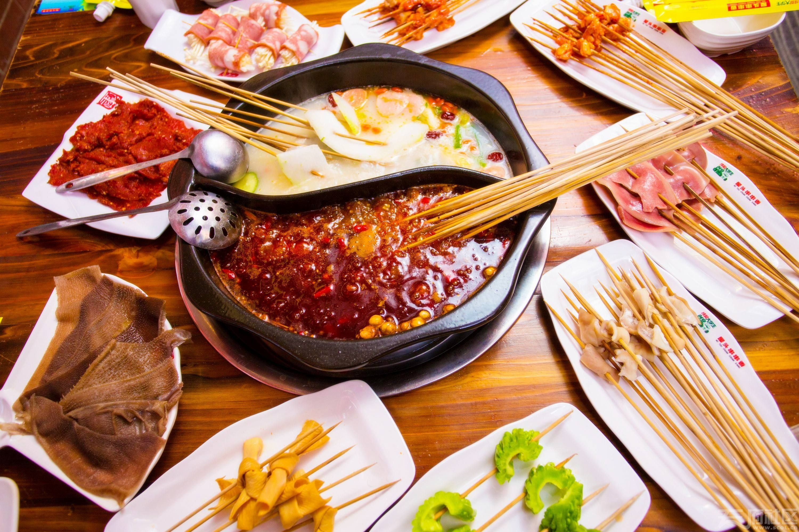

我的爱好
- 旅游 的生活充满变化，不再一成不变，处处都是惊喜，随时等着我们去发掘。旅行既可以放松心情，又可以舒缓压力，还能增广见识。
- 运动 健身不仅能增强人的体格、提升身体机能，也能磨练人的意志，锤炼人的精神、健身即使对身体机能的一种唤醒提升，也是对精神意志的一种挑战磨练。
- 摄影 的意义就是用相机记录历史，在瞬间冻结历史，是瞬间永恒，摄影从它出现的那一刻起就赋予了它记录的使命。对于喜欢摄影的人来说，摄影的意义在于拍摄美丽的食物并与大家分享，从而让生活变得更好。

- 美食 美食可以抚慰人的心灵，在品味美食的过程中，能让人的内心变的愉悦，完全沉浸在美食的诱惑中，也是很幸福的事情，不同的美食带来不同的感受，尽情感受美食的魔法吧，给生活增添不少色彩。
- 电影 优秀的电影让我们的生命在不同纬度上得以延伸，痛过黑暗中的光影，我们有机会跨域时间和空间的限制，几乎是无限拓展自己的生命体验，同时领悟那些被掩盖在平凡人生之后的永恒真理。
- 追剧 看电视剧的好处，恰如你要拔出自己相对较长的一段时间，去沉浸式体验他人生活中点点滴滴的经历，给你营造另一种生活的方式。